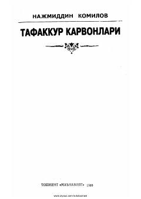

TKSharq madaniyati, islom olami allomalari va ularning jahon ilm-faniga qo'shgan hissasi haqida asar.
Ushbu kitobda Sharq madaniyati, Islom dunyosi ilm-fan yutuqlari hamda ulug' allomalarimizning ilmiy merosi jahon bo'ylab tarqalishi haqida so'z boradi. Shuningdek, G'arb va Sharq madaniyatlari o'zaro aloqalari, mumtoz adabiyot namoyandalarining asarlari va ularning jahon adabiyotiga ta'siri qiziqarli uslubda yoritilgan.